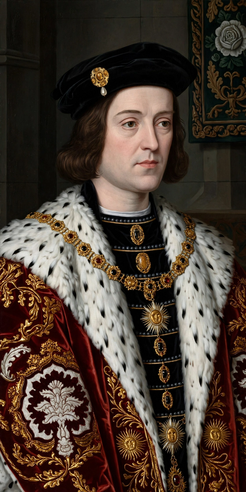

| Edward IV | |
|---|---|
| Reign | 4 March 1461 – 3 October 1470; 11 April 1471 – 9 April 1483 |
| Born | 28 April 1442, Rouen, Normandy |
| Died | 9 April 1483, Westminster |
| House | York |
| Spouse | Elizabeth Woodville |
| Father | Richard, Duke of York |
Edward IV (28 April 1442 – 9 April 1483) was King of England from 1461 to 1470 and again from 1471 until his death — the first Yorkist king, who seized the throne in the Wars of the Roses and, alone among the kings of that conflict, died in possession of it, unbeaten in battle.

Eldest surviving son of Richard, Duke of York, Edward took up the Yorkist claim after his father's death at Wakefield in 1460. With the backing of Richard Neville, Earl of Warwick — the "Kingmaker" — he won the bloody Battle of Towton (March 1461) and was crowned in June. Strikingly tall, handsome and charismatic, he was also a shrewd and ruthless politician.
His secret marriage to the widowed Elizabeth Woodville (1464) and his favouring of her family alienated Warwick, who defected, restored Henry VI in 1470, and drove Edward into exile in Burgundy. Edward returned in 1471 and destroyed his enemies at Barnet (where Warwick was killed) and Tewkesbury, where Henry VI's son Edward of Westminster died; Henry himself died in the Tower shortly after.
Edward's second reign brought solvency, patronage of Caxton's printing, and a pension from France under the Treaty of Picquigny (1475). He executed his treacherous brother George, Duke of Clarence, in 1478. His sudden death in April 1483, aged forty, left the throne to his twelve-year-old son Edward V — one of the Princes in the Tower — and opened the way to Richard III's usurpation.
Wars of the Roses · Princes in the Tower · Henry VII · Battle of Towton